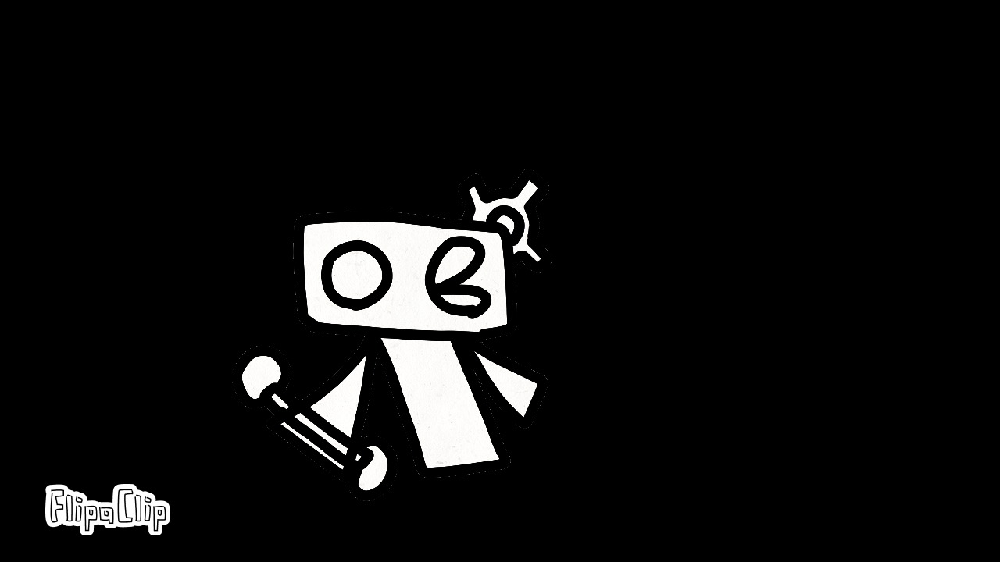

Fokus
Fokus is a productivity application developed to help users manage their tasks and better organize their time.
The project was developed using C# and MySQL, implementing various functionalities for task management and time tracking.
C#
MySQL
WinForms
.NET
Galería del proyecto

Arreit
Arreit is a horror walking simulator set in an reverse world, where the player has to keep moving, talking to people, and discovering new paths.
The project was developed using C#, frameworks and .NET
C#
WinForms
.NET